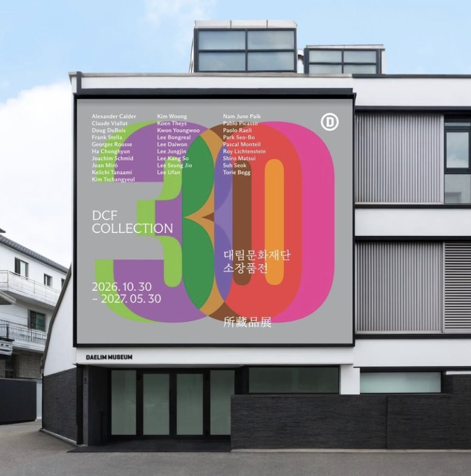
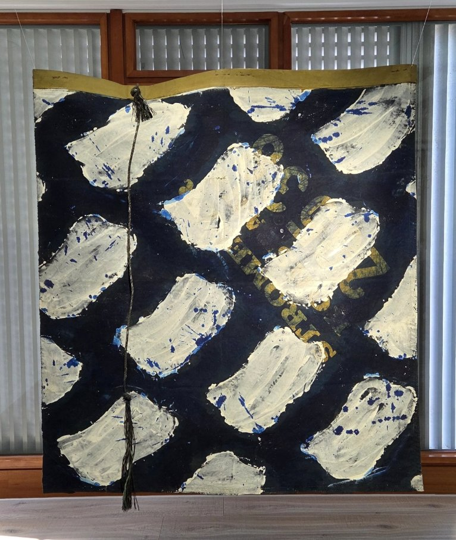
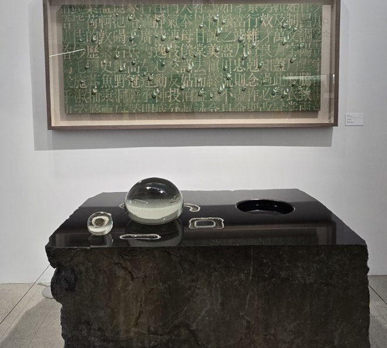
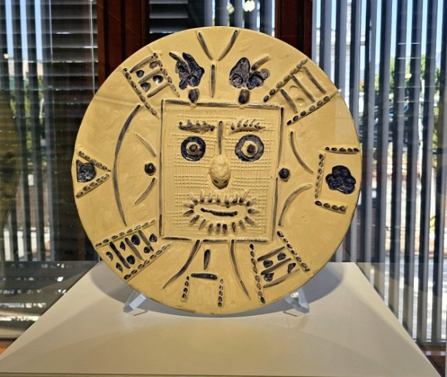
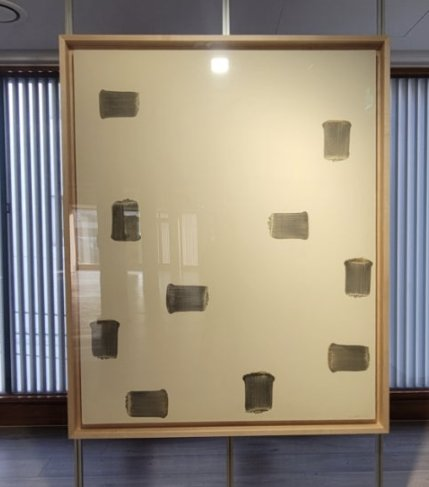
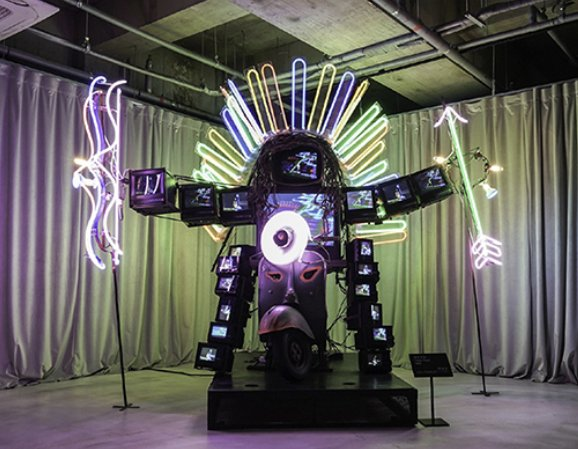

[대림문화재단 소장품전] 피카소부터 백남준까지 무료관람 총정리
요즘 서촌에서 가장 핫한 무료 전시가 궁금하다면? 지금 확인해 보세요!

요즘 서촌 골목을 걸으면 확실히 가을이 깊어진 게 느껴지죠. 마침 이런 계절에 대림미술관이 피카소, 김창열, 백남준 같은 거장들의 작품 70여 점을 전면 무료로 공개했다는 사실, 알고 계셨나요? 바로 대림문화재단 설립 30주년을 기념하는 《DCF Collection: 대림문화재단 소장품전》인데요. 화려한 연출로 ‘인증샷 명소’라 불리던 대림미술관이 이번엔 ‘작품 그 자체’를 전면에 내세웠다는 점에서 더 눈길이 갑니다. 재단이 여는 첫 소장품전이기도 하고요. 그래서 오늘은 층별 관람 포인트부터 관람 정보까지 한데 모아봤어요. 서촌 나들이 계획이 있다면 꼭 확인해 보세요!
🏛️ 30년 만에 열린 대림미술관의 수장고
💡 어떤 전시인가요?
대림문화재단 소장품전은 재단이 30년 동안 모아 온 작품을 처음으로 한자리에 펼친 전시입니다. 20세기 중반부터 지금까지, 국내외 작가 28인의 작품 70여 점을 만날 수 있어요. 재단의 시작은 서울이 아닌 대전이었는데요. 1996년 국내 최초의 사진 전문 미술관인 한림미술관으로 출발해, 2002년 서울 통의동으로 옮겨 지금의 대림미술관이 됐죠.
가장 큰 특징은 작품을 시대나 장르별로 나누지 않았다는 점이에요. 대신 서로 다른 작품 사이의 관계에 주목해 배치했는데요. 그래서 교과서에서 본 익숙한 작품도 낯선 조합 속에서 새롭게 읽힌다는 게 포인트! 대림미술관은 이를 ‘층을 오를 때마다 달라지는 시선’이라고 소개하고 있고요.

1층, 28년 만에 공개된 김창열의 물방울

💡 어떤 작품이 있나요?
전시의 첫 문을 여는 작가는 단연 김창열입니다. 대림미술관의 전신인 한림미술관 개관전에도 참여했던, 미술관과 인연이 깊은 작가죠. 캔버스 밖으로 금방이라도 흘러내릴 듯한 물방울 그림으로 유명한데요. 이번에는 천자문 위에 물방울을 올린 회화 <회귀>(1995)와 함께 조각 <비나이다>(1996)를 나란히 볼 수 있어요.
특히 <비나이다>는 28년 만에 처음 공개되는 작품이에요. 평면에 그리던 물방울을 입체 조각으로 발전시킨 작업이라는 점에서 더 특별하죠. 회화와 조각을 번갈아 보면 같은 물방울이 어떻게 다르게 표현됐는지 비교하는 재미가 있답니다.
📌 이렇게 감상해 보세요!
물방울 그림은 멀리서 한 번, 가까이서 한 번 보는 걸 추천해요. 멀리서는 진짜 물방울처럼 보이다가, 가까이 다가가면 빛과 그림자를 그려 넣은 붓자국이 보이거든요. 그다음 조각 주위를 천천히 돌며 각도별로 달라지는 모습을 보는 식으로요.
2층, 익숙한 것을 낯설게 보는 거장들

💡 어떤 작품이 있나요?
한 층 올라가면 일상의 대상을 새롭게 바라본 작품들이 기다리고 있어요. 파블로 피카소, 호안 미로, 로이 리히텐슈타인, 프랭크 스텔라부터 서세옥, 이대원, 이정진까지 국내외 작가 12명이 참여했는데요. 피카소는 얼굴의 정면과 옆모습을 한 화면에 담은 인물화 <Portraits imaginaire>(1969)로 익숙한 얼굴을 낯설게 만들죠.
회화뿐만 아니라 둥근 접시 위에 네모난 얼굴을 새긴 피카소의 도자기도 만날 수 있는데요. 익숙한 그릇을 캔버스로 쓴 셈이죠.
미로의 대표작 <어릿광대의 사육제>에서는 눈과 귀가 달린 사다리 같은 기묘한 존재들이 한바탕 축제를 벌입니다. 1960년대 만화와 광고에서 영감을 받은 리히텐슈타인의 팝아트도 만날 수 있고요. 꽃이 만발한 과수원을 점찍듯 채운 이대원의 <Farm>(2000)은 서양 거장들 사이에서 또 다른 색감을 보여주는 작품이에요.
📌 이렇게 감상해 보세요!
2층은 작품 사이의 공통점을 찾아보며 돌기 좋아요. 가령 피카소의 얼굴과 미로의 기묘한 존재를 번갈아 보며 ‘두 사람은 사물을 어떻게 비틀었을까?’ 떠올려 보는 식으로요.
3층, 마음을 비워 바라보는 선과 면

💡 어떤 작품이 있나요?
3층에서는 종이 위의 패인 자국, 몇 번의 붓질, 천 사이로 배어 나온 물감 같은 작은 흔적이 주인공이에요. 넓은 화면에 붓자국 세 개만 남긴 이우환의 <Correspondance>(1993), 물에 적신 한지를 밀고 긁기를 반복한 박서보의 <묘법>(1992)이 대표적이죠. 천 뒷면에서 물감을 밀어 앞으로 배어 나오게 하는 하종현, 반복된 선으로 화면을 채운 김웅의 <Black&White(Pencil)>(1978)도 함께 만날 수 있습니다.
📌 이렇게 감상해 보세요!
단색화는 화려한 그림이 아닌데도 한참을 들여다보게 되는 매력이 있어요. 특히 박서보의 <묘법>은 가까이 다가갈수록 종이가 접히고 패인 결이 선명해지니, 천천히 거리를 좁혀 가며 보는 걸 추천해요.
4층, 새롭게 보는 영상과 팝아트

💡 어떤 작품이 있나요?
마지막 4층에서는 새로운 매체와 상상력으로 현실을 다르게 바라본 작품들이 이어져요. 가장 눈길을 끄는 건 단연 백남준의 <Happy Hoppi>(1995)인데요. 모니터를 두른 로봇 모양 조각에 네온 빛이 더해져 사진으로만 봐도 존재감이 대단하죠. 이 밖에도 타나아미 케이이치의 팝아트, 20년 넘게 가족의 변화를 기록한 더그 드부아의 사진 작업 등을 만날 수 있어요.
📌 이렇게 감상해 보세요!
1층의 회화와 조각에서 출발한 관람이 4층에서 영상과 빛으로 확장되는 흐름이에요. 그러니 4층까지 다 본 뒤 아래층을 다시 떠올려 보세요. ‘물방울에서 네온 로봇까지’ 작품이 어떻게 이어지는지 나만의 스토리를 만들어 보는 식으로요.
🎟️ 관람 정보 총정리
| 전시명 | DCF Collection: 대림문화재단 소장품전 |
|---|---|
| 기간 | 2026년 10월 30일(금) ~ 2027년 5월 30일(일) |
| 장소 | 대림미술관 (서울 종로구 자하문로4길 21) |
| 운영 시간 | 화~일 11:00~18:00 |
| 휴관일 | 매주 월요일, 신정(1/1), 설 연휴(2/7, 2/8) |
| 관람료 | 무료 |
| 예약 | 사전 예약 권장. 예약 없이 현장 방문도 가능하지만 상황에 따라 대기할 수 있어요 |
| 구성 | 작가 28인, 작품 70여 점 (1~4층) |
💡 더 알차게 보는 방법은요?
전시를 더 깊이 즐기고 싶다면 연계 프로그램도 챙겨 보세요. 관람 속도에 맞춰 들을 수 있는 모바일 가이드, 관람객이라면 누구나 참여할 수 있는 정규 투어, 단계별 미션으로 즐기는 미션 플레이: LOOK · FEEL · MAKE까지! 이 밖에 단체 전시 해설 ‘스페셜 필드트립’과 ‘슬로우 아트데이’도 운영돼요. 일정과 신청 방법은 대림미술관 홈페이지에서 확인할 수 있고요.
대림문화재단 소장품전은 ‘인증샷 명소’로 익숙했던 대림미술관이 화려한 연출을 덜어내고 작품 그 자체에 집중한 전시입니다. 물방울에서 네온 로봇까지, 층을 오를수록 시선이 바뀌는 경험을 무료로 누릴 수 있다는 게 가장 큰 매력이죠. 서촌이 가장 예쁘게 물드는 계절인 만큼, 이번 주말 가벼운 산책 코스에 대림미술관을 넣어 보는 건 어떨까요? 분명 마음에 오래 남을 작품 하나를 만나게 될 거예요~